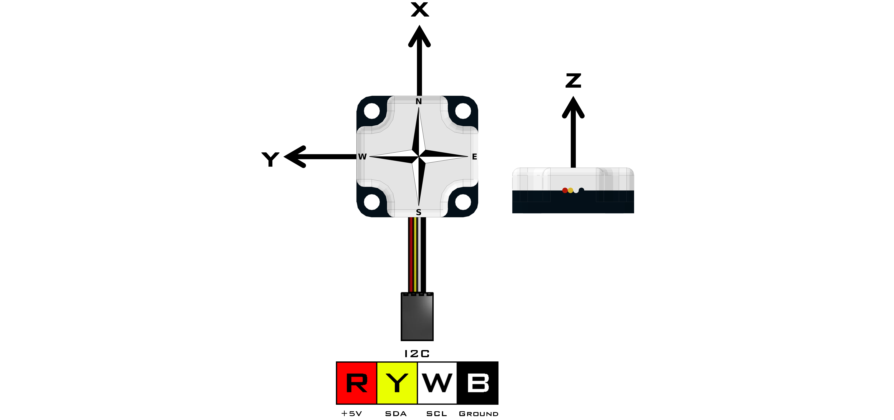

Compass (45-2003)
The Compass uses a magnetometer and an accelerometer to calculate heading data based on Earth’s magnetic field. The compass can return the heading data, accelerometer data and magnetometer data to the user. Anything that generates a magnetic field must be moved away from the sensor like power cables, motor or magnetic material. This must happen because during calibration the sensor will add an offset to account for other magnetic sources in the area.
Sensor Type : Four Wire I2C
Default I2C Address : 0x24
Sensor ID Code : 0x63
Dimensions : 32mm x 32mm x 12mm
Mounting Holes : 24mm x 24mm
Power : 5V DC, 22mA Max
Signal Logic Levels : Logic 0 - 0V, Logic 1 - 5V
I2C Bus Speed : 100kHz max
I2C Address Change Option : Yes (Even Number 0x10 - 0xEE)Compass Visual Programming Blocks
Compass Python Library Information

Register | Function |
|---|---|
0x00 | Sensor Firmware Revision |
0x01 | Manufacturer Code |
0x02 | Sensor ID Code |
0x03 | Command |
0x04/0x05 | Heading Data (lsb/msb) |
0x06/0x07 | Accelerometer X Value (lsb/msb) |
0x08/0x09 | Accelerometer Y Value (lsb/msb) |
0x0A/0x0B | Accelerometer Z Value (lsb/msb) |
0x0C/0x0D | Magnetometer X Value (lsb/msb) |
0x0E/0x0F | Magnetometer Y Value (lsb/msb) |
0x10/0x11 | Magnetometer Z Value (lsb/msb) |
0x12/0x13 | Accelerometer X Offset (lsb/msb) |
0x14/0x15 | Accelerometer Y Offset (lsb/msb) |
0x16/0x17 | Accelerometer Z Offset (lsb/msb) |
0x18/0x19 | Magnetometer X Offset (lsb/msb) |
0x1A/0x1B | Magnetometer Y Offset (lsb/msb) |
0x1C/0x1D | Magnetometer Z Offset (lsb/msb) |
0x1E/0x1F | Magnetometer Tilt Coefficient (lsb/msb) |
0x20/0x21 | Accelerometer Scale Coefficient (lsb/msb) |
0x22/0x23 | Magnetometer X Scale Coefficient (lsb/msb) |
0x24/0x25 | Magnetometer Y Scale Coefficient (lsb/msb) |
Command | Operation | EEPROM Auto-Update |
|---|---|---|
0x00 | Normal measurement mode | |
0x43 | Hard Iron Calibration mode | X |
0x58 | Accelerometer X axis null | X |
0x59 | Accelerometer Y axis null | X |
0x5A | Accelerometer Z axis null | X |
0x47 | Accelerometer sensitivity/gain adjust | X |
0x55 | Measure tilted up accelerometer value | |
0x44 | Measure tilted down accelerometer value | X |
0x57 | Write EEPROM Data | X |
During normal operation, the LED will blink briefly at 1Hz. During Hard Iron Calibration,the LED will blink at ½Hz. During tilt up and tilt down calibration the LED will be onduring a period of calibration measurement.
Hard Iron Calibration
Hard Iron Calibration is entered by setting the command location to 0x43. Once Hard Iron Calibration is active rotate the Compass 360°, making sure it does not tilt, for a period of 5 seconds. Once the rotation procedure is complete, the command location must be set to 0x00 to signal that calibration is complete. If the data collected during the rotation was good, the Compass will enter Normal Measurement Mode using the new calibration data. If the data collected during the rotation was not good, the command value will change to 0x46 and the Compass will enter Normal Measurement Mode using the previous calibration data.
Tilt Compensation
Tilt compensation is performed in two steps, tilt up and tilt down in that order. The first step is tilt up. To set the Compass up for tilt up measurement, the Compass should be pointed due North and set with the front of the device tiled up by approximately 20°. Then the command location should be set to 0x55 while the Compass is held perfectly still. Once the LED extinguishes itself, the command location will return to 0x00, indicating that tilt up data has been captured.
The second step is tilt down. To set the Compass up for tilt down measurement, the Compass should be pointed due North and set with the front of the device tilted down by approximately 20°. Then the command location should be set to 0x44 while the compass is held perfectly still. Once the LED extinguishes itself, the command location will return 0x00, indicating that tilt down data has been captured and the tilt compensation coefficient has been acquired.
If the two tilt steps are not performed in the correct order, or some other error is detected, the command location will be set to 0x46 and the Compass will enter Normal Measurement Mode using the previous tilt compensation coefficient.
Accelerometer Nulling
Accelerometer axis nulling is performed using the three axis null commands. For both the x and y axis nulling should be performed with the device set perfectly level. Setting the command location to 0x58 will update the accelerometer X axis offset. Setting the command location to 0x59 will update the accelerometer Y axis offset. For the Z axis nulling, the device should be set to be perfectly vertical. Setting the command location to 0x5A will update the accelerometer Z axis offset
Accelerometer Scale Coefficient
The Accelerometer Scale Coefficient is adjusted to be approximately 1mg/count. If greater measurement accuracy is required, the Accelerometer Scale Coefficient (fsb/lsb) may be set by the user. This can be simply done by setting the device perfectly vertical and obtaining the accelerometer X value via registers 0x06 and 0x07.
Once the Accelerometer Scale Coefficient has been adjusted, the 0x57 command should be issued to ensure the new value is recorded in EEPROM.Example:
Step 1: Sensor Position
Set the sensor vertical so that the wires are pointing up in the air.Step 2: Find the X Value
Find the Accelerometer X Value - Register 0x06(lsb)/0x07(msb)Register 0x06 (lsb) = 0xE2
Register 0x07 (msb) = 0x04X Value = msb:lsb = 0x04:0xE2 = 0x04E2 = 1250
Step 3: Calculating Scaling Value
Scaling Value = 1000/X Value = 1000/1250 = .8Step 4: Calculate Register Values
Register Values (lsb:fsb) = .8*256 = 204.8 = 204 = 0xCC = 0x00CCStep 5: Enter Values into Accelerometer Scale Coefficient Register
Accelerometer Scale Coefficient = 0x20(fsb)/0x21(lsb)Register 0x20 (fsb) = 0xCC
Register 0x21 (lsb) = 0x00Step 6: Saving the value to EEPROM
Enter a value of 0x57 (Write EEPROM Data) to the Command Register (0x03) to save the scaled value into EEPROM.